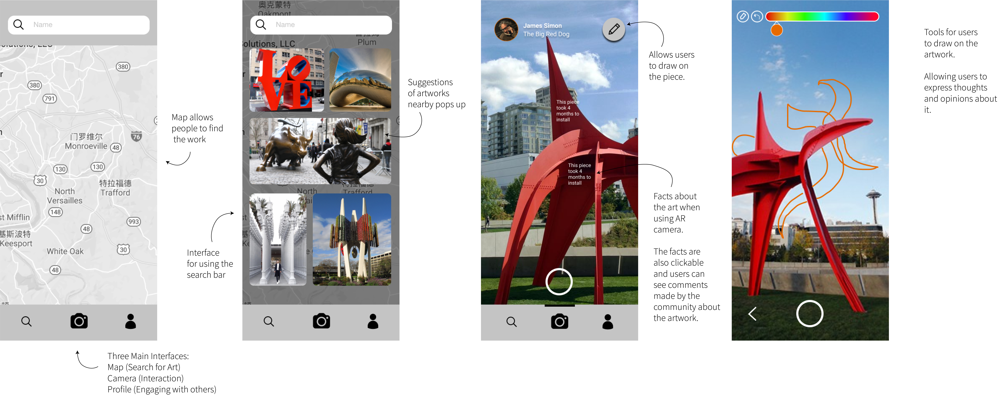

Lea Emerlyn
Art in PUBLiC Space
Creating a platform for users to engage in conversations with each other and with artists

Group Mates:
Michelle Lee, Michelle Tsang, Lauren Park, Yue (Carol) Jiang
Roles:
Researcher/UX Designers
Duration:
January 2020 — May 2020
Tools:
Figma, Mural, Zoom, Skype
Research Methods:
Semi-Structured Interviews, Think-Aloud Protocols, Speed Dating, Experience Prototyping
EXECUTIVE SUMMARY
Public art is meant to be readily accessible to everyone, yet an issue the public faces is barriers preventing viewers from interacting with the art piece. We identified three main barriers: Prior Knowledge, Proximity and Privacy. Our solution to breaking down these barriers is an interactive application using augmented reality to encourage users to physically go to the art site.
Before our project team came together as a group, each member researched the domain of public art. We narrowed down our problem to How Might We Encourage the Communication Between Artists and Viewers as well as Viewers and Viewers? To find a solution for our stakeholders, we conducted Think-Aloud Protocols, Speed Dating Sessions and Experience Prototyping.
Two interesting insights that we found were:
1. Viewers seemed interested in interacting with the artwork, but there was no medium for that purpose.
2. Viewers had a high threshold for talking about art. This contradicts one of the purpose of public art, which is allowing anyone to talk about it
This presented us with the opportunity to fill this gap and provide an interactive platform with the following key features:
1. Explore page for uses to explore surrounding art pieces
2. The artifacts profile in which users can unlock facts about the art piece and communicate with the artist
3. Users can draw on the art piece
Timeline

BACKGROUND
From previous research, we know that a primary reason for installing art in a city is that it increases the livability of a space. People can feel a sense of connectedness to the community as well as the city. It gives the city a landmark and people feel proud of living there. From the studies that we looked at, researchers were using level of engagement with the public art to measure how it can increase livability. Our team’s goal is to identify a problem space other than engagement.
Before our team got together as a group, each of us tried to understand the current state of public art using data from previous research. We watched recordings of interviews, done experiential research and created stakeholder maps. We were able to generate insights, create Usability Finding Templates (UFTs) and Data Visualizations.
Here is the user journey map that I created:

The goal of the first team meeting was to identify a problem space that we want to research further. We conducted a Walk the Wall session and pinpointed common themes among our data. Here are the common themes:


Key takeaways from the Walk the Wall session:
1. Storytelling is important for a viewer because it shows the significance of an art piece and allows them to understand its purpose. Many times, it is difficult for viewers to find information about the artwork.
2. It is interesting if we can provide a platform for communal engagement, like everyone can be a creator for public art pieces. Perhaps during the creation of the artwork, the general public can contribute to the final outcome.
3. Art pieces can be dynamic and attract more users to interact with them. By dynamic, we mean that the artwork can physically move or engage the viewers in some way. Many artworks we have seen are static, which many people find boring because there is nothing to do other than looking at it.
4. There can be more interactions using mobile applications. The mobile apps that we explored are not very developed. We think that mobile apps might increase interactions between viewers and the art.
5. People need low user threshold and high attraction grabbing to separate public arts from the environment.
Reframing Activity
Our team also chose to do a reverse assumption activity in order to identify a problem space that we were interested in.

The assumption that we were most interested in is “public art is only created by artists,” and its opposite “public art can be created by anyone.” This lead us to our problem space/project definition:
How might we encourage an active feedback loop between artist and the public during the creation of public art?
We wanted allow the public to be able to participate in the creation of the artwork in some way. If the general public has a voice during the creation process, it ensures that public art is representative of the people.
We went into the semi-structured interviews with this problem definition. However, during the interpretation sessions, we found insights that were less related to this problem space and more towards fostering communication. This led us to reframe and narrow our project definition to:
How might we encourage the communication between artists and viewers as well as viewers and viewers?
We continued the rest of the research process with this problem space instead.
PROBLEM
How Might We Encourage the Communication Between Artists and Viewers as well as Viewers and Viewers?
Why does this matter?
The current state of public art has a problem: The intention of public art contradicts the reality of its experience.
The intention is that we see public art as something anyone can enjoy. There is no fee, no time limit and no barriers to enjoy public art. In other words, there is a low threshold of entry. However, the reality is that people think art has a high threshold of entry. People think that there are barriers between them and public art, which are preventing them from talking about public art with one another. The three barriers that we identified are: Prior Knowledge, Proximity, Privacy
Prior Knowledge
We found that people thought that they needed background knowledge to talk about public art with one another. They think that they need to be of a certain intellect or class to talk about it. These people also did know any suitable platform they can use to learn more about the art.
Proximity
People confine their experience with public art to when they were proximally close the art piece. The experience of public art ends whenever they leave the site. They will not talk about it with others unless they are at the site. During their daily lives, people will not talk about public art because they are not physically close to it.
Privacy
We saw that people thought that their art experience was a private and individual experience. They thought that they did not want their interpretations of the artwork to be influenced by others’ interpretations.
METHODS
Semi-structured interviews
We went into the semi-structured interviews with our original problem space: How might we encourage an active feedback loop between artists and the public during the creation of public art.
We recruited five viewers of public art and one artist. Some of the main questions asked were: “Do you notice public art around your neighborhood? When you see those artwork, do you want to express your opinions to the artist? Does public art shape your understanding of the city or reinforces what you know about the city? If not, how would you modify these art pieces to be more representative of the city? Do you think the public has a say in these types of art pieces? How might we foster that?" After every session, we held an interpretation session.
Key Insights
The topic of public art has a perceived certain threshold that allows people to engage with or talk about it.
The level of exposure to public art is influenced by people’s daily routines. We observed that the measure of how often one views public art is dependent on where people go on a daily basis.
We found that people enjoy novel interactions with public art. Our users think that public art should be more than a simple painting. It should be more dynamic rather than static and be creative with the medium/container of the artwork.
Affinity Diagram
Here is the link to the mural page for the full diagram: Affinity Diagram

Based on our interviews, our users were not very concerned about representation in public art. They did not talk about wanting to see more artworks that are representative of the area or wanting to be part of the creation of public art. Rather, they were talking more about the barriers that public art has. They think that it is difficult to talk about public art because of a perceived threshold and their proximity to the pieces. People also want to be able to interact with the art more, and because of modern technology they think that it is possible to make art more engaging.
Think-Aloud Protocols
We used James Simon’s website to test the functionality and usability of the site. We were curious to see what viewers wanted to see in a website and how the experience can be improved for them. Here is the website that we used: James Simon's Website
As a group, we created 9 UFTs. Feel free to look through them:
Key Insights
It was difficult for the user to browse through the art pieces, making it hard to identify a specific art piece and related art pieces. (UFT #1)
Some of our users used a search function to look for a specific piece. One looked for a search bar within the site, while the other search by clicking Ctrl+F. Many users had to hover over every piece to find the one they were looking for. "There must be a search bar. I can’t believe I need to hover over every piece."
Actions to Take:
1. Provide a filter and sort system to personalize the users’ interests and help them identify art pieces that they probably like, so that they would be more willing to talk/contribute their thoughts on art pieces.
2. Provide clear labeling of titles besides artwork images so that users do not need to hover their mouse to identify them
Users couldn’t easily identify the location of the art pieces (UFT’s #3 and #8).
In the descriptions of the art pieces, the users were not able to find the location of the art pieces. They had to open another tab and seek external sources in order to find the information. The users seemed like they expected this sort of information to be on the artist’s site. “The most important information about a piece of public art is its location. How would people interact with it if they don’t even know where it is?”
Actions to Take:
1. Implement real-time ETA to the art piece based on user’s location
2. Or include a short, concise address with an interactive map on the site
Users find it hard to understand art pieces without knowing the contexts of art pieces (UFT #9)
Even after reading the information regarding the art piece, the user wanted more information. The information on the page does not seem to answer the users had in mind. For example, why was the piece placed in this specific location. This would make it difficult for users to ask insightful questions to the artist, hindering communication with artists about their works.
Actions to Take:
1. Provide thorough information about the art piece and segment them into different pieces so that users are able to select information they are interested in to get to know art pieces.
2. Provide a communication tunnel for viewers and they are able to ask questions on the page if any information they would like to know is lacking on the website.
3. Include a frequently asked page/tab for the artwork.
Speed Dating
Each of us created one scenario for the speed dating session. Every scenario has three story boards. Each storyboard for the scenarios gets progressively more risky so that we can test the limits of the users. Here are the storyboards that we created:

Findings and Insights:
The main concern for users when interacting with the artist or artist’s work were
1. Users need privacy, otherwise they prefer not to participate
2. Users need useful visual and contextual information delivered in a non-intrusive medium
3. Users need to feel creatively empowered in order to engage
4. Users prefer an efficient way to directly contact the artist
5. Users prefer both ways of drawing and writing to encourage all users to express their ideas
Quotes:
“I like this scenario because it feels like a game and it makes me want to explore.”
“I would use the drawing function because it gives people something fun to do around the art.”
Design Ideas and Opportunities
1. Users seem to prefer increasing receptivity to creativity
2. People are more willing to learn information that are scaffolded for them.
3. People care about personal information and it is an opportunity to create interfaces that protect their privacy data.
4. People are interested in interacting with art pieces and they are willing to draw or write to actively interact with art pieces.
5. Including relevant information about the artwork
6. People will not communicate actively about public art. We need to reduce user effort in communication. Moreover, we can also increase their motivation of communication by providing interactive experience or receiving positive feedback from artists.
7. Artifacts (Games, art boards) around the art can be a gateway to motivate users to communicate with artist
SOLUTIONS
After conducting various research, we decided that we want to create an app that allows users to communicate with others. The app will also give users a personalized experience while viewing the art. We named this app PUBLiC.
Features
AR camera
1. Allows users to scan art pieces to view interesting facts
2. Facts are clickable to allow users to comment under them
3. Take a picture and draw/add icons to share with others
4. Value — Opportunity to contribute in discussion among viewers and artists by expressing creatively and commenting shared in a common space of public art interest
Explore for More
1. Allows users navigate art pieces and learn more information by searching through different categories
2. Locked Information: Can only view artist’s facts, and others’ drawings by personally visiting artwork site first
3. Can contact the artist by sending messages directly
4. Value — Motivates people to join a community by actively viewing a piece, Addresses need for instant communication tool between viewers and artists
Social Platform
1. Allows users to comment on fun facts of art piece when they are viewing it in person
2. Provides an open space for viewers and artists to express their thoughts
3. Value — Motivates people to communicate more with each other, Reducing the threshold of viewing and talking about art pieces
Here is what our first iteration looked like:
Experience Prototyping
We created the prototype using Figma and tested the usability of the app with several users.
Insights and Findings:
1. Users thought that this application was highly interactive because they had to physically go to the art piece in order to reveal information
2. Users want to have cleaner screens and all the interactions are easy to understand
3. Users enjoyed the collection based structure of the application
4. Users thought the search icon was redundant
5. Users wanted to know their location respective to the art piece
6. Users believed that the locked “Facts and Drawings” meant that they would have to unlock them through a premium subscription
7. Users believe that reacting and liking facts about the art piece are unnecessary; they degrade factual information and makes the app feel more like social media, which distracts from understanding the value of art by rating pieces of information
Quotes:
"The search icon looks like you are looking up something. Expected a search bar to pop up. If it were a map, it should be a map/compass icon."
"I think that it is cool that you can see other’s work and have it be locked before you go see it."
Changes made for second iteration:
1. Search icon → Navigation icon
Rationale: Users thought that the search icon was used to look for images and not for navigating
2. Made the comments on the art piece look more clickable
Rationale: Users didn’t know that the comments were clickable
3. Included a marker for user location
Rationale: Users would like to know where they are in relation to the art pieces
Second Iteration:
Here is the link to the prototype in Figma: Prototype

REFLECTION
When I first met with my group members, I was afraid that I would not meet the group’s standards for the project. Because I have never participated in any sort of research before, I did not know what to expect and was nervous the first time I interviewed a participant. I was pushed out of my own comfort zone by recruiting interviewees and talking to strangers over zoom. Looking back at the semester, I was proud of the work I have done.
Challenges
1. Interviews
Because I was so nervous when I conducted the interview, I was worrying about whether everything would go well. I wanted to follow the interview guide thoroughly to make sure that I did not miss any important steps of the interview. I think that because I worried too much about the structure of the interview, I seemed uninterested during the interview. For the future, I will try to focus less on following the guide/structure and more on learning about the interviewee.
2. Designing Interfaces
I have worked with Figma in the past for individual projects. This is the first time that I tried designing interfaces with a team. I was glad that I learned so much from my teammates because it was clear that they had a lot more experience than me. Because I have never taken a design course before, I was mentored on design principles while making the interfaces.